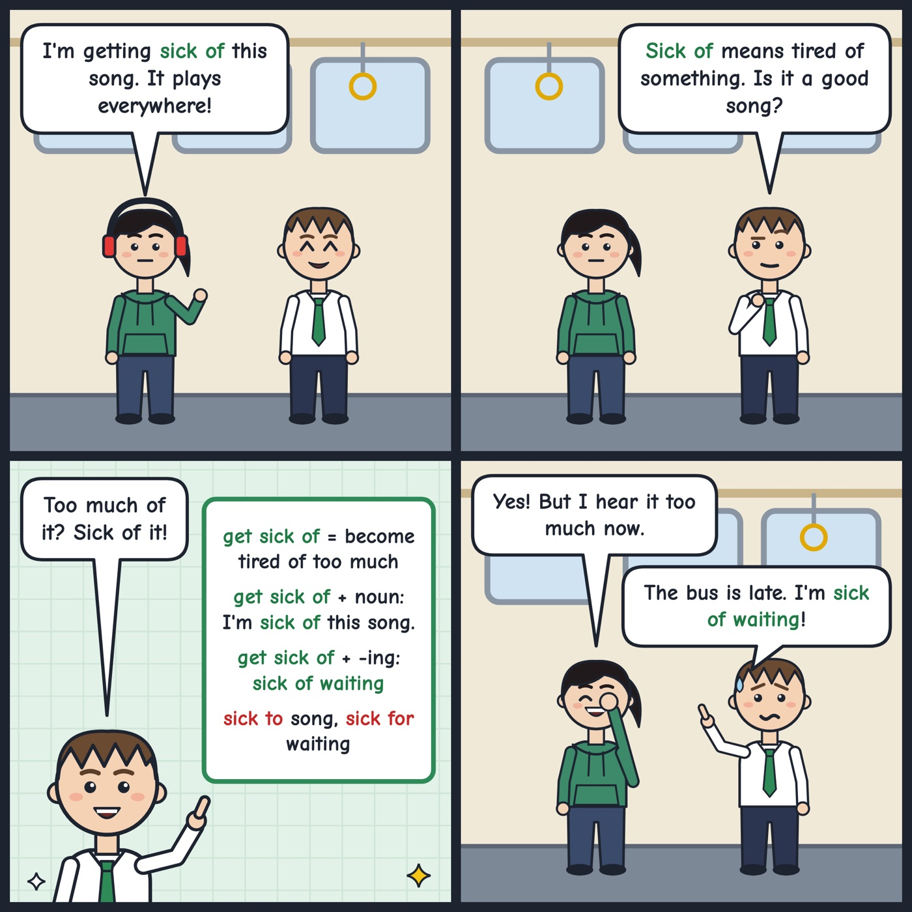

get sick of
To become tired of something or someone because you have had too much of it.
I'm getting sick of this rainy weather. I want some sun!
'Get sick of + noun/-ing' means you are tired of something because you have had too much.

Your turn
What are you sick of hearing right now?
What are you sick of hearing right now?